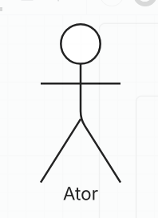
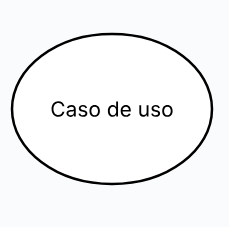
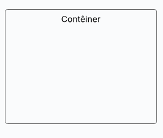
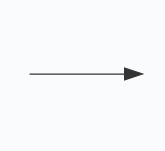
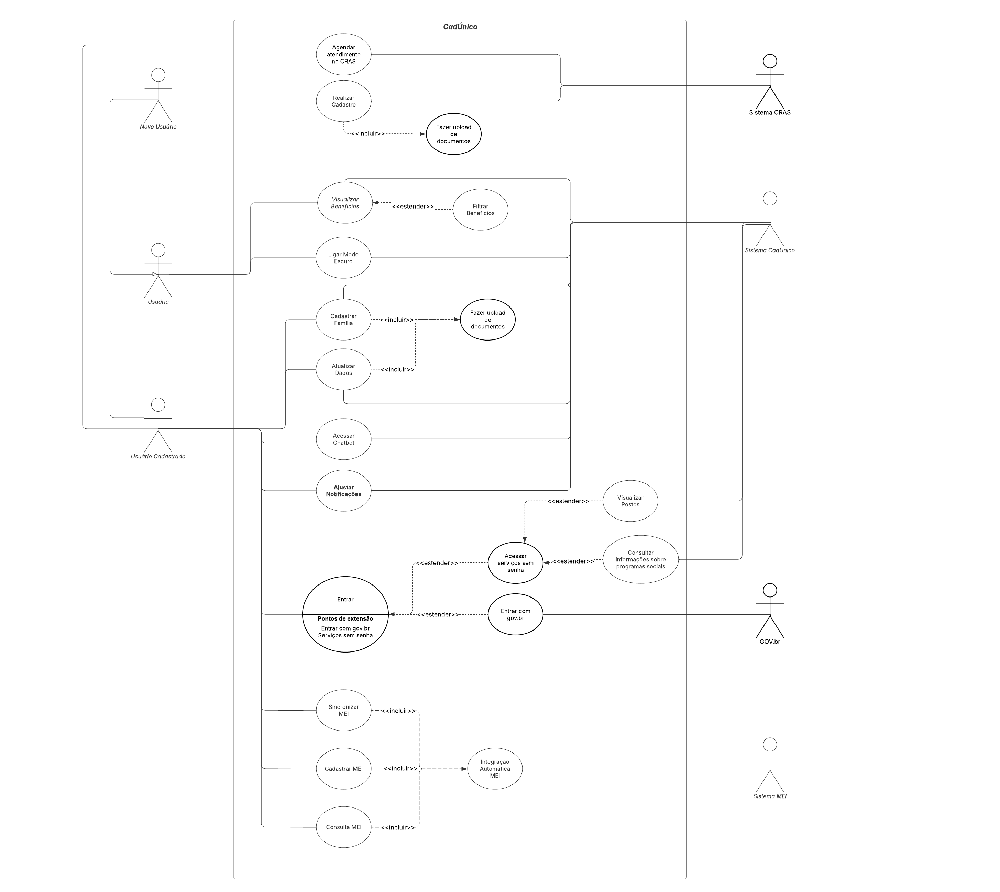

Casos de Uso
Funções dos autores
| Nome | Função |
|---|---|
| Amanda Cruz | Criação do caso de uso 15 |
| Gabriel Flores | Criação dos casos de uso 16 e 17; Criação do diagrama |
| João Igor | Criação do caso de uso 14 |
| João Pedro Costa | Criação da página; Criação dos casos de uso 10 à 13; Adição de referências e imagens; Correção pelo metodo de Fagan; Revisão geral |
| Julia Gabriela | Criação dos casos de uso 1 à 3, 6 e 7. |
| Ryan Salles | Revisão geral; Criação dos casos de uso 4, 5, 8 e 9; Criação do diagrama. |
Introdução
Os casos de uso são uma técnica de modelagem que representa uma sequência de interações entre um sistema e um ator(es) externo, culminando em um resultado valioso para o ator. Os nomes dos casos de uso devem ser sempre estruturados como um verbo seguido de um objeto. É importante selecionar nomes fortes e descritivos para deixar evidente, pelo nome, que o caso de uso entregará algo valioso para algum usuário.
Metodologia
O diagrama de casos de uso é uma representação visual da interação de atores com o sistema e visa facilitar o entendimento de como se dará o uso por parte dos atores primários e como os atores secundários se relacionam às funcionalidades que o sistema apresenta. Para melhor entender a interação do usuário com os sistemas e aplicativo, as personas Larissa Mendes Costa e Beatriz Oliveira Santos foram utilizadas para modelar os atores Usuário Cadastrado e Novo Usuário, respectivamente. Para o ator generalizado Usuário, ambas as personas foram utilizadas.
A Tabela 1 apresenta os elementos presentes no diagrama de caso de uso e suas funcionalidades.
Tabela 1: Elementos do diagrama de casos de uso
| Nome | Função | Elemento |
|---|---|---|
| Ator | Determina algo ou alguém que interagirá com o sistema |  |
| Elipse (Caso de Uso) | Determina os casos de uso dentro do sistema |  |
| Retângulo (Sistema) | Determina limites do sistema |  |
| Flecha (Relações) | Determina relações entre os casos de uso ou atores e casos de uso. Pode ser pontilhada. |  |
Diagrama de Casos de Uso
A Figura 1 apresenta o Diagrama de Casos de Uso elaborado pelo grupo 4.

Casos de Uso
As Tabelas, enumeradas de 2 a 16, definidas como UC01 a UC15 apresentam a especificação de cada caso de uso.
[#UC01] Visualização de Benefícios Ativos
Tabela 2: Especificação de visualização de benefíficos ativos
| Campo | Detalhes |
|---|---|
| Descrição | Permite ao usuário visualizar os benefícios sociais ativos vinculados ao seu cadastro no CadÚnico, como o Bolsa Família. |
| Ator(es) | Usuário cadastrado |
| Pré-condições | O usuário possui cadastro validado no CadÚnico e está autenticado no aplicativo. |
| Ação | O usuário acessa a opção “Meus Benefícios” para verificar seus benefícios ativos. |
| Fluxo principal |
|
| Fluxo de exceção |
|
| Pós-condições | O usuário visualiza seus benefícios de forma clara e atualizada. |
| Data de Criação | 17/05/2025 |
| Rastreabilidade | RF24 |
Autora: Julia Gabriela
[#UC02] Atualização de Dados Cadastrais
Tabela 3: Especificação de dados cadastrais
| Campo | Detalhes |
|---|---|
| Descrição | Permite ao usuário atualizar seus dados pessoais e residenciais no CadÚnico, como endereço e telefone. |
| Ator(es) | Usuário cadastrado |
| Pré-condições | O usuário está logado no aplicativo e possui cadastro existente. |
| Ação | O usuário acessa a seção “Atualizar Cadastro” para alterar informações residenciais. |
| Fluxo principal |
|
| Fluxo de exceção |
|
| Pós-condições | Os dados são enviados para análise e o usuário é notificado que há uma atualização em processamento. |
| Data de Criação | 17/05/2025 |
| Rastreabilidade | RF05 |
Autora: Julia Gabriela
[#UC03] Primeiro Cadastro no CadÚnico
Tabela 4: Especificação de primeiro cadastro no sistema
| Campo | Detalhes |
|---|---|
| Descrição | Permite a novos usuários realizar seu primeiro cadastro no CadÚnico através do aplicativo. |
| Ator(es) | Novo usuário |
| Pré-condições | O usuário possui documentos válidos e acesso à internet. |
| Ação | O usuário realiza o primeiro cadastro preenchendo os dados exigidos pelo sistema. |
| Fluxo principal |
|
| Fluxo de exceção |
|
| Pós-condições | Um cadastro preliminar é criado e enviado para avaliação por um agente social. |
| Data de Criação | 17/05/2025 |
| Rastreabilidade | RF19 |
Autora: Julia Gabriela
[#UC04] Conferir informações sobre benefícios
Tabela 5: Especificação de consulta de informações sobre benefícios
| UC04 | Conferir informações sobre benefícios |
|---|---|
| Descrição | Permite aos usuários, com ou sem autenticação, ler sobre os possíveis benefícios disponíveis no aplicativo |
| Ator(es) | Usuário |
| Pré-condições | O usuário possui o aplicativo instalado em seu dispositivo compatível |
| Ação | O usuário confere informações sobre os benefícios e informa-se |
| Fluxo principal |
|
| Fluxo de exceção |
|
| Pós-condições | O usuário possui informações sobre o programa social escolhido |
| Data de Criação | 17/05/2025 |
| Rastreabilidade | RF24 |
Autor: Ryan Salles
[#UC05] Verificar postos de atendimento
Tabela 6: Especificação de verificação de postos de atendimento
| UC05 | Verificar postos de atendimento |
|---|---|
| Descrição | Permite aos usuários verificar postos de atendimento disponíveis |
| Ator(es) | Usuário, Sistema CadÚnico |
| Pré-condições | O usuário possui um dispositivo compatível com o aplicativo e acesso à internet. |
| Ação | O usuário confere informações sobre os postos de atendimento disponíveis. |
| Fluxo principal |
|
| Fluxo de exceção |
|
| Pós-condições | O sistema lista informações sobre os postos disponíveis. |
| Data de Criação | 17/05/2025 |
| Rastreabilidade | RF16 |
Autor: Ryan Salles
[#UC06] Cadastrar família
Tabela 7: Especificação de cadastro familiar
| UC06 | Cadastrar família |
|---|---|
| Descrição | Permite ao responsável familiar registrar sua família no Cadastro Único para acessar benefícios sociais. |
| Ator(es) | Responsável familiar |
| Pré-condições | Acesso à internet, posse de documentos da família, uso de smartphone ou computador |
| Ação | O usuário realiza o cadastro de sua família |
| Fluxo principal |
|
| Fluxo alternativo |
|
| Fluxo de exceção |
|
| Pós-condições | Família registrada como grupo familiar no sistema, com cadastro pendente de validação |
| Data de Criação | 13/05/2025 |
| Rastreabilidade | RF01 |
Autora: Julia Gabriela
[#UC07] Filtrar Benefícios Sociais
Tabela 8: Especificação de filtragem de benefícios
| UC07 | Filtrar Benefícios Sociais |
|---|---|
| Descrição | Permite ao usuário buscar e filtrar informações sobre benefícios sociais disponíveis de acordo com seu perfil ou interesse. |
| Ator(es) | Usuário (autenticado ou não) |
| Pré-condições | Acesso ao aplicativo e à internet |
| Ação | O usuário realiza filtros para buscar benefícios sociais no aplicativo |
| Fluxo principal |
|
| Fluxo alternativo |
|
| Fluxo de exceção |
|
| Pós-condições | O usuário visualiza os benefícios sociais de acordo com os filtros aplicados |
| Data de Criação | 13/05/2025 |
| Rastreabilidade | RF23 |
Autora: Julia Gabriela
[#UC08] Chatbot
Tabela 9: Especificação de chatbot automatizado
| UC08 | Acessar chatbot |
|---|---|
| Descrição | Permite aos usuários consultar um assistente virtual configurado para responder questões e dúvidas frequentes |
| Ator(es) | Usuário, Assistente Virtual |
| Pré-condições | O usuário possui um dispositivo compatível com o aplicativo e acesso à internet. |
| Ação | acessar Chatbot |
| Fluxo principal |
|
| Fluxo de exceção |
|
| Pós-condições | O usuário tem sua dúvida esclarecida. |
| Data de Criação | 17/05/2025 |
| Rastreabilidade | RF26 |
Autor: Ryan Salles
[#UC09] Modo Escuro
Tabela 10: Especificação de modo escuro
| UC09 | Ativar modo escuro |
|---|---|
| Descrição | Permite aos usuários ativar um "modo escuro", o qual altera a saturação e luminosidade da interface para uso em ambientes de baixa luminosidade |
| Ator(es) | Usuário |
| Pré-condições | O usuário possui um dispositivo compatível com o aplicativo |
| Ação | ligar modo escuro |
| Fluxo principal |
|
| Fluxo de exceção |
|
| Pós-condições | O usuário se sente mais confortável para utilizar o aplicativo |
| Data de Criação | 17/05/2025 |
| Rastreabilidade | RF38 |
Autor: Ryan Salles
[#UC10] - Indicação de MEI no momento do cadastro
Tabela 11: Especificação de indicação MEI
| UC10 | Indicação de MEI no momento do cadastro |
|---|---|
| Descrição | Permite que o usuário informe, durante o processo de cadastro no CadÚnico, que é um Microempreendedor Individual (MEI). |
| Ator(es) | Usuário em processo de cadastro |
| Pré-condições | Usuário acessando o app e iniciando novo cadastro |
| Ação | Indicação da condição de MEI durante o cadastro |
| Fluxo principal | 1. O usuário inicia o cadastro no app CadÚnico 2. Preenche dados pessoais 3. Marca a opção “Sou MEI” 4. Finaliza o cadastro |
| Fluxo alternativo | O usuário ignora a opção → sistema registra como não MEI |
| Fluxo de exceção | Dados inconclusivos → sistema alerta para verificação posterior |
| Pós-condições | A condição de MEI é registrada no perfil do usuário |
| Data de Criação | 16/05/2025 |
| Rastreabilidade | RF11 |
Autor: João Pedro
[#UC11] - Acesso a informações sobre MEI
Tabela 12: Especificação de acesso a informações MEI
| UC11 | Acesso a informações sobre MEI |
|---|---|
| Descrição | Permite que usuários MEI consultem conteúdos informativos sobre microempreendedorismo no app CadÚnico. |
| Ator(es) | Usuário com perfil MEI |
| Pré-condições | Usuário logado com perfil registrado como MEI |
| Ação | Consulta de informações sobre MEI |
| Fluxo principal | 1. O usuário acessa a seção “MEI” no app 2. Visualiza temas como obrigações, benefícios, formalização, linhas de crédito 3. Acessa conteúdos de interesse, com links e orientações |
| Fluxo alternativo | Perfil não registrado como MEI → sistema exibe convite para formalização |
| Fluxo de exceção | Conteúdo indisponível → sistema exibe mensagem informativa |
| Pós-condições | O usuário adquire conhecimento sobre seus direitos e deveres como MEI |
| Data de Criação | 16/05/2025 |
| Rastreabilidade | RF12 |
Autor: João Pedro
[#UC12] - Personalização de conteúdos da seção MEI
Tabela 13: Especificação de personalização MEI
| UC12 | Personalização de conteúdos da seção MEI |
|---|---|
| Descrição | Permite que o sistema personalize os conteúdos exibidos na seção MEI com base no setor de atuação e localização do usuário. |
| Ator(es) | Usuário MEI cadastrado |
| Pré-condições | Usuário logado com setor de atuação e município informados |
| Ação | Personalização automática de conteúdos |
| Fluxo principal | 1. O usuário acessa a seção “MEI” 2. O sistema identifica setor e região 3. Exibe conteúdos segmentados (editais, obrigações, notícias) 4. Permite interação com os conteúdos |
| Fluxo alternativo | Setor não informado → sistema solicita preenchimento complementar |
| Fluxo de exceção | Localização não disponível → sistema utiliza município do cadastro |
| Pós-condições | O usuário visualiza conteúdos relevantes ao seu perfil |
| Data de Criação | 16/05/2025 |
| Rastreabilidade | RF13 |
Autor: João Pedro
[#UC13] - Consulta e sincronização automática com a base de dados do MEI
Tabela 14: Especificação de consulta e integração MEI
| UC13 | Consulta e sincronização automática com a base de dados do MEI |
|---|---|
| Descrição | Permite que o CadÚnico sincronize dados MEI com a Receita Federal automaticamente |
| Ator(es) | Sistema do CadÚnico |
| Pré-condições | Usuário com CNPJ MEI ativo vinculado ao CPF no CadÚnico |
| Ação | Sincronização automática de dados |
| Fluxo principal | 1. Sistema realiza integração periódica com Receita Federal 2. Identifica usuários com CNPJ MEI 3. Recupera dados do MEI (status, atividade, débitos) 4. Atualiza o perfil do usuário no app 5. Notifica o usuário sobre atualizações |
| Fluxo alternativo | Dados inconsistentes CPF/CNPJ → alerta técnico para revisão |
| Fluxo de exceção | Falha de conexão com Receita → tentativa armazenada e reagendada |
| Pós-condições | Perfil MEI atualizado automaticamente no CadÚnico |
| Data de Criação | 16/05/2025 |
| Rastreabilidade | RF11, RF13, RF40 |
Autor: João Pedro
[#UC14] - Agendamento no CRAS através do aplicativo
Tabela 15: Especificação de agendamento no CRAS
| UC14 | Agendamento no CRAS através do aplicativo |
|---|---|
| Descrição | Permite que o usuário realize agendamento de atendimento nos postos do CRAS através do aplicativo CadÚnico |
| Ator(es) | Usuário e Sistema CRAS |
| Pré-condições | Usuário com dispositivo compatível com o aplicativo e acesso à internet |
| Ação | Agendar atendimento no CRAS |
| Fluxo principal |
|
| Fluxo alternativo | Dados inconsistentes → alerta técnico para revisão |
| Fluxo de exceção | Falha de conexão com o sistema CRAS → tentativa armazenada e reagendada |
| Pós-condições | Agendamento de atendimento no CRAS realizado |
| Data de Criação | 18/05/2025 |
| Rastreabilidade | RF30 |
Autor: João Igor
[#UC15] - Acesso a tutoriais interativos
Tabela 16: Especificação de tutorias interativos
| UC15 | Acesso a tutoriais interativos |
|---|---|
| Descrição | Permite que o usuário acesse vídeos e tutoriais interativos para entender como utilizar os programas sociais disponíveis |
| Ator(es) | Usuário e Sistema CadÚnico |
| Pré-condições | O sistema possui vídeos e tutoriais explicativos |
| Ação | Acesso a tutoriais interativos e vídeos explicativos sobre programas sociais |
| Fluxo principal | 1. Acessa a seção “Tutoriais e Dicas” 2. Sistema exibe uma lista de tutoriais. 3. Escolhe um tutorial para visualizar. 4. Sistema exibe o escolhido. 5. Interage com o conteúdo 6. Aplicativo registra a visualização e sugere outros conteúdos |
| Fluxo alternativo | Tutorial não carregar corretamente → Tenta carregar novamente ou oferece uma opção alternativa para visualização |
| Fluxo de exceção | Usuário com dificuldades para entender o conteúdo → Sugere um atendimento assistido por chat |
| Pós-condições | O usuário visualiza o conteúdo e compreende os programas sociais com facilidade |
| Data de Criação | 18/05/2025 |
| Rastreabilidade | RF35 |
Autor: Amanda Cruz Lima
[#UC16] - Upload de documentos
Tabela 17: Especificação de upload de documentos
| UC16 | Upload de documentos |
|---|---|
| Descrição | Permite que o usuário envie documentos digitalizados (como comprovante de residência, RG, CPF) diretamente pelo aplicativo para complementação do cadastro |
| Ator(es) | Usuário e Sistema CadÚnico |
| Pré-condições | O usuário deve estar logado no sistema e com o cadastro iniciado |
| Ação | Enviar documentos por meio da interface do aplicativo |
| Fluxo principal |
|
| Fluxo alternativo | Documento em formato inválido → mensagem de erro e sugestão de formatos suportados |
| Fluxo de exceção | Falha de conexão com o sistema CadÚnico → documentos transferidos armazenados |
| Pós-condições | Documentos associados ao cadastro do usuário, já estão vinculados ao seu cadsstro |
| Data de Criação | 18/05/2025 |
| Rastreabilidade | RF29 |
Autor: Gabriel Flores
[#UC17] - Notificação de Pendências ou Atualizações
Tabela 18: Especificação de notificação de pendências ou atualizações
| Campo | Detalhes |
|---|---|
| Descrição | Permite que o usuário receba notificações automáticas sobre pendências ou atualizações necessárias em seu cadastro, garantindo que esteja sempre informado para manter seus dados regulares e não perder benefícios. |
| Ator(es) | Usuário cadastrado, Sistema CadÚnico |
| Pré-condições | O usuário possui cadastro ativo no CadÚnico, está autenticado no aplicativo e tem as notificações habilitadas. |
| Ação | Receber notificação de pendências ou atualizações no aplicativo. |
| Fluxo principal |
|
| Fluxo de exceção |
|
| Pós-condições | O usuário está ciente da pendência ou atualização e pode tomar as ações necessárias para regularizar seu cadastro. |
| Data de Criação | 04/07/2025 |
| Rastreabilidade | RF27 |
Autor: Gabriel Flores
Tabela de Rastreabilidade UC-CEN-RF
A tabela de rastrabilidade é apresentada por meio da Tabela 3, que contêm informações de rastreabilidade do caso de uso apresentado e sua relação com o(s) respectivo(s) cenário(s) e requisito(s) funcional(ais).
| Caso de Uso (UC) | Cenário (CN) | Requisito Funcional (RF) |
|---|---|---|
| UC01 | CN01 | RF24 |
| UC02 | CN02 | RF05 |
| UC03 | CN03 | RF19 |
| UC04 | CN04 | RF24 |
| UC05 | CN05 | RF16 |
| UC06 | CN06 | RF01 |
| UC07 | CN07 | RF23 |
| UC08 | CN08 | RF26 |
| UC09 | CN09 | RF38 |
| UC10 | CN10 | RF11 |
| UC11 | CN11 | RF12 |
| UC12 | CN12 | RF13 |
| UC13 | CN13 | RF11, RF13, RF39 |
| UC14 | CN14 | RF30 |
| UC15 | CN15 | RF35 |
| UC16 | CN16 | RF29 |
| UC17 | CN17 | RF27 |
Bibliografia
WIEGERS, Karl E.; BEATTY, Joy. Software Requirements. 3. ed. Redmond: Microsoft Press, 2013, p. 144-145.
Imagem 1: Casos de Uso

Imagem 2: Casos de Uso

Histórico de Versões
| Versão | Data | Descrição | Autor | Revisor |
|---|---|---|---|---|
| 1.0 | 16/05/2025 | Criação da pagina e adição de casos de uso 10, 11, 12, 13 | João Pedro Costa | Ryan Salles |
| 1.1 | 16/05/2025 | Adicionando referencias sobre o tema e imagens | João Pedro Costa | Ryan Salles |
| 1.2 | 16/05/2025 | Adicionando 5 casos de uso | Julia Gabriela | Ryan Salles |
| 1.3 | 17/05/2025 | Adicionando casos de uso 4 e 5 | Ryan Salles | João Pedro Costa |
| 1.4 | 17/05/2025 | Adicionando casos de uso 8 e 9 | Ryan Salles | João Pedro Costa |
| 1.5 | 17/05/2025 | Consertando tabela e casos de uso | João Pedro Costa | Ryan Salles |
| 1.6 | 18/05/2025 | Adicionando casos de uso 14, padronizando o documento e corrigindo erros | Gabriel Flores | João Igor |
| 1.7 | 18/05/2025 | Melhorando seção Metodologia | Ryan Salles | João Pedro Costa |
| 1.8 | 18/05/2025 | Adicionando caso de uso 15 | Amanda Cruz | João Pedro Costa |
| 1.9 | 18/05/2025 | Adicionando caso de uso 14 | João Igor | Gabriel Flores |
| 2.0 | 18/05/2025 | Adicionadas figuras e diagramas | Gabriel Flores, Ryan Salles | João Igor |
| 2.1 | 18/05/2025 | Adicionando caso de uso 16 e 17 | Gabriel Flores | João Igor |
| 2.2 | 20/05/2025 | Criando tabela de funções | Julia Gabriela | João Pedro Costa |
| 2.3 | 22/06/2025 | Correção pelo metodo de inspeção de Fagan | João Pedro | Ryan Salles |